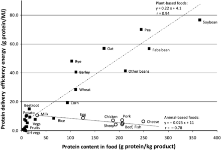
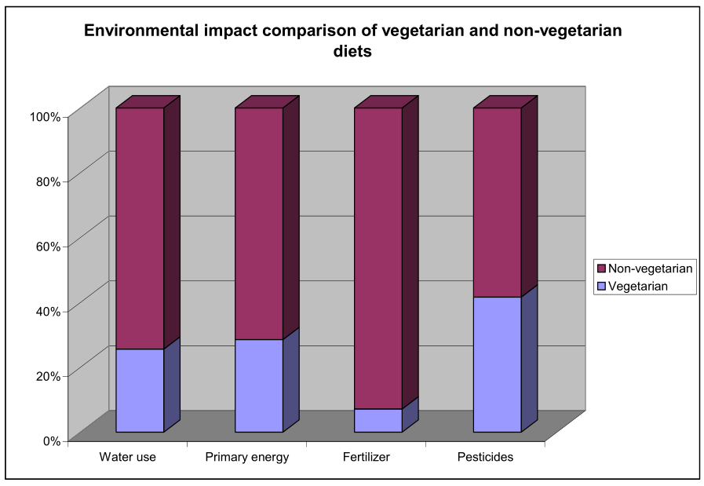

Should Animals be Used for Food?
Article 002, 2022/9/12
Should animals be used for food? Historical precedent and tradition has allowed the exploitation of animals because they were considered lesser, or even incapable of thought or feeling. It’s time that we examine this tradition and determine whether it’s one that should be continued or changed. In this essay, I make the argument that animals should not be exploited for food; I break my argument into two parts, the ethical view and the practical view, and I explain why animals shouldn’t be exploited from both viewpoints. The practical argument is more concrete than the ethical, because ethics are naturally subjective, although I believe that there are some things which almost all people should agree on, and I present my case by building off of that base.
From the ethical viewpoint, animals should not be used for food, meaning that they should not be killed for or otherwise exploited for food. Most people consider humans to be more important than all other life on Earth, probably because we ourselves are humans. The belief that members of one species are morally more important than members of other species is called speciesism, and has been compared to other forms of “-isms” such as racism (1). Speciesism informs carnism, the belief system that conditions people to eat certain animals (2).
The speciesist mindset which is learned in humans tells us that animals are fundamentally different from humans, and that humans are superior to all other life; many ancient traditions follow this viewpoint. For example, many religions say that humans have souls while animals do not, or that humans have complete dominion over the Earth and are free to exploit animals in any way they see fit.
At the foundation of ethics is a very simple point: suffering is bad. Suffering can be defined as: “the state of undergoing pain, distress, or hardship”. If suffering is bad, then the absence and prevention of suffering are good. Suffering is all around us in life. It might even be described as an integral and necessary part of living, in order to make us better appreciate the good moments, if those moments exist at all. Some people might argue that because life contains suffering, no matter how much, life isn’t worth living—a kind of antinatalism that extends past humans to all life. The more agreeable notion is that if a life is only suffering then it isn’t worth living. The easiest way to prevent suffering in life is to not create life. When the exploitation of animals ceases, the breeding of them ceases too; the prevention of their birth is the prevention of their suffering. A farm animals’ whole life is suffering, especially a factory-farmed one. They are bred to unnatural and extreme lengths, and kept in cages to be exploited for their short lives until their slaughter.
In recent years, more and more evidence is piling up to suggest that animals are much more “human” than were previously thought. Firstly, many animals are considered to be sentient, meaning that they are “able to perceive or feel things”. It’s impossible to know, with current scientific technology, the depth of emotion that animals possess, but it can be inferred that it is not far off from humans. Humans and chimpanzees, for example, share over 99% of their DNA, so it’s very likely that chimps feel things and perceive the world in a very similar way to us (3). All life on Earth is related by a common ancestor, and lifeforms that have a brain, the most likely to have feelings comparable to humans, are all related by an even more recent common ancestor. Because life is so strongly related to one another, and because humans didn’t develop separately from other life, it must be that humans have emotive capabilities comparable to other animals, at the very least to our most related cousins, the apes. Bioinformatician Bernhard Haubold from the Max Planck Institute of Chemical Ecology writes that: “Over the past 30 years the underlying biochemical unity of all plants, animals and microbes has become increasingly apparent. All organisms share a similar genetic machinery…” (3).
All forms of discrimination are interconnected in a big web, informing and encouraging each other, and supporting each other to continue existing and oppressing. This web consists not only of human discrimination, but of non-human forms too; and the human and non-human discriminations both encourage and support each other in the same ways that different types of human discriminations do. For example, animal exploitation can be directly compared to sexism and feminist issues. This is because animal exploitation is gendered, exploiting females more heavily due to their reproductive abilities. Cows are forced to birth calves so that they will produce milk, and hens are bred to lay an unnatural amount of eggs which strains their bodies (4). Our exploitation of animals can be compared in similar fashion to many other forms of human oppression, because the ethics that we apply towards animals can, subconsciously or not, infect our human societies.
Because humans naturally consider themselves superior to other animals, and because many people believe that that belief is justified, it’s important to consider whether animals are morally considerable to the same degree that humans are. Historically, animals have been considered as lesser. It wasn’t until the 1700s that the idea of animal rights started gaining traction in Western philosophy (5). Lori Gruen, a modern philosopher from Stanford, breaks the argument into two sides: absolutist and utilitarian. The absolutist position states that all life has worth and that all life has rights equally. The utilitarian position states that “the moral significance of the claims of animals depends on what other morally significant competing claims might be in play in any given situation” (6). This means that, according to the utilitarian position, it might be morally justifiable to kill an animal if you’re starving. However, Gruen warns that if it can be morally tolerated to violate the rights of an animal, then similar rights violations, including human ones, can be morally tolerated (6). Even if some people can tolerate the exploitation of animals, I doubt that those same people would tolerate the exploitation and oppression of humans, especially loved ones; yet, every day human rights are violated and people are exploited. Avoiding the slippery slope that animal exploitation brings about would prevent many human rights disasters. This means that, along with the inherent worth that animals’ lives have, we should not exploit animals for the risk that it poses to humans.
Historically, our treatment of animals has influenced the way in which we treat humans. Jews during the Holocaust were called vermin and pests, and were treated “like animals”, meaning they were treated like objects with no feelings. If we always have this hierarchy where animals are at the very bottom, then it’s easy for us to make ourselves unequal by comparing certain groups of people to animals, to the bottom of the hierarchy. If the hierarchy didn’t exist—if every being was treated as exactly equal to one another—then it would also be much more difficult for humans to make ourselves unequal to each other. Edgar Kupfer, a survivor of the Dachau death camp, wrote: “I refuse to eat animals because I cannot nourish myself by the sufferings and by the death of other creatures. I refuse to do so, because I suffered so painfully myself that I can feel the pains of others by recalling my own sufferings” (7 p. 99). Because animal exploitation is linked to human suffering, and because there are such clear parallels between the two, we should not exploit animals for food.
The choice to rid oneself of animal exploitation is not just a moral one, it also is a choice for good health and for the environmental sustainability of the planet. The ethical viewpoint argued that animal exploitation was not morally justifiable, especially since it can be directly compared to forms of human oppression. From the practical viewpoint, exploiting animals for food is both unhealthy and unsustainable.
Vegetarian and vegan diets are continually found to be healthy by modern studies, whereas an omnivorous diet is continually found to be unhealthy. As to the health of vegetarianism, Clinical Nurse Specialist (CNS) Susan Berkow and Medical Doctor Neal Barnard reviewed data from 87 studies and found that “vegetarian populations have lower rates of heart disease, high blood pressure, diabetes, and obesity” (8,9). Additionally, according to People for the Ethical Treatment of Animals (PETA), “People following a plant-based diet have 2.5 times fewer cardiac events, including heart attacks, strokes, bypass surgery, and angioplasty.” (10). Since heart disease is the leading cause of death in America and a vegetarian or vegan diet has been shown to prevent and even reverse heart disease, adopting such a diet could significantly prolong life (4).
On the flip side, meat has serious detrimental health effects. Researchers from the Harvard T.H. Chan School of Public Health found that there were “significant associations between increased red meat consumption and increased deaths due to cardiovascular disease, respiratory disease, and neurodegenerative disease” (11). This, along with the previous paragraph, suggest that a plant-based diet is significantly healthier than one which includes meat, especially for preventing cardiovascular diseases such as heart disease. This is because red meat is high in cholesterol; excess cholesterol in the blood can build up on the walls of arteries, eventually causing problems such as heart attacks, blood clots, and heart disease (10). And it’s not just red meat which has high cholesterol, white meat such as poultry also has high cholesterol content (12). Meat, in addition to concerns of high cholesterol, also causes cancer. In 2015, the International Agency for Research on Cancer (IARC), a part of the World Health Organisation, classified processed meat as a human carcinogen (13). For these reasons, it can be concluded that meat should be avoided as a whole.
Many people wrongly believe that plant-based diets are low in protein. Firstly, the average American already consumes too much protein (4). Secondly, plants are actually much higher in protein content per kg compared to meats and animal products, as can be seen in this figure (14). The “protein delivery efficiency” in animal products goes down as the protein content goes up, whereas the protein delivery efficiency goes up for plants.
In addition to the negative health effects of a diet which includes animal products, it is also unsustainable. In comparison to vegetarian diets, the non-vegetarian diet requires “2.9 times more water, 2.5 times more primary energy, 13 times more fertilizer, and 1.4 times more pesticides than for the vegetarian diet” (14). See the following graph created to represent this data with percentages.
As can be seen, a vegetarian diet significantly reduces the amount of each resource used. Based on this, it’s clear that a vegetarian or vegan diet is the clear choice to make if one is concerned about the environment. In fact, if everyone switched to a meatless diet, greenhouse gas emissions would be reduced by 17% for CO2, 24% for CH4, and 21% for N2O (14). Animals should not be used for food because, on a practical level, a plant-based diet emits fewer greenhouse gasses, and uses less water, energy, fertilizer, and pesticides than a carnist diet.
Animals, from an ethical viewpoint, have moral value and comparable emotive capabilities to humans, including the ability to feel pain and suffer; from a practical viewpoint, animals shouldn’t be used for food because plant-based diets are healthier and more sustainable. If people want to save the planet while simultaneously being healthier and giving their life longevity, they need to recognise the rights of animals and strive to eat a plant-based diet, as well as remove all animal products from their lifestyles. Veganism is the only reasonable choice.